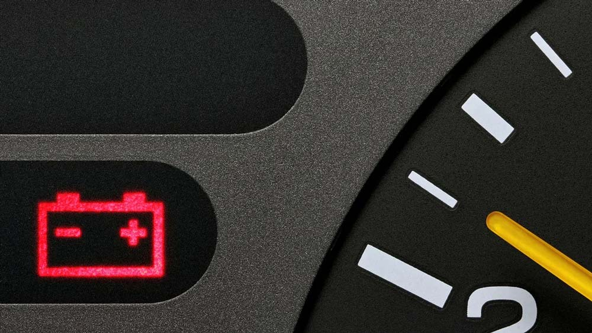
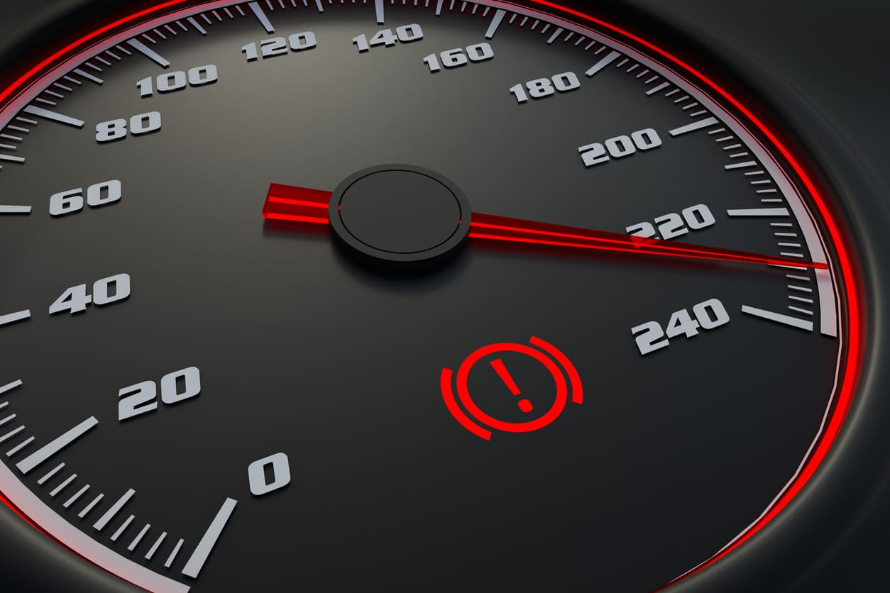
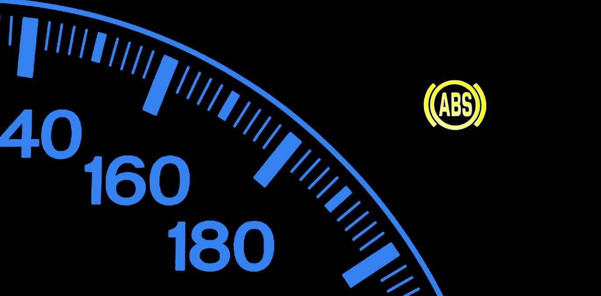

1. Introdução às Luzes de Painel
As luzes de painel do carro são sinais importantes que informam ao motorista sobre o funcionamento do veículo. Cada luz tem uma função específica e deve ser tratada com a devida atenção.
Fique sempre atento às luzes do painel, elas ajudam a identificar problemas antes que se tornem mais graves.

Qual é a função das luzes de painel?
2. Luz do Motor (Check Engine)
Uma das luzes mais comuns e importantes é a luz do motor, também conhecida como "Check Engine". Quando essa luz acende, pode indicar um problema no motor ou no sistema de emissões.
Se a luz do motor acender, é recomendável levar o veículo a um mecânico para diagnóstico, mesmo que o carro esteja funcionando normalmente.

O que significa quando a luz "Check Engine" acende?
3. Luz de Óleo
A luz de óleo acende quando o nível de óleo do motor está baixo ou quando a pressão do óleo está insuficiente.
Verifique o nível de óleo imediatamente ao acender a luz. Se o nível estiver baixo, complete com o óleo adequado. Podemos dizer que uma das luzes consideradas mais perigosas do painel, e serve para mostrar ao motorista que há uma pane no sistema de lubrificação do motor. Nesse cenário, o ideal é parar o veículo de forma imediata, pois sem ser lubrificado, o motor acaba sendo severamente danificado.

O que deve ser feito quando a luz de óleo acende?
4. Luz de Temperatura do Motor
A luz de temperatura acende quando o motor está superaquecendo. Isso pode ser causado por problemas no sistema de arrefecimento, como falta de água no radiador ou falha na bomba de água.
Se essa luz acender, pare o carro imediatamente e deixe o motor esfriar. Verifique o nível de água do radiador e procure um mecânico.

O que deve ser feito quando a luz de temperatura acende?
5. Luz de Bateria
A luz da bateria acende quando há um problema no sistema de carregamento do carro, como a falha do alternador ou um cabo solto.
Se a luz da bateria acender, verifique a fiação e o alternador. Se o problema persistir, procure um profissional para evitar ficar na estrada com a bateria descarregada.

O que significa quando a luz da bateria acende?
6. Luz de Freio
A luz de freio pode acender por várias razões, como o nível baixo de fluido de freio ou quando o sistema de freios precisa de manutenção.
Verifique o nível do fluido de freio. Se a luz acender e o freio não estiver funcionando corretamente, leve o carro imediatamente a um mecânico.

O que significa quando a luz de freio acende?
7. Luz de ABS
A luz do ABS (Sistema de Antibloqueio de Rodas) acende quando há uma falha nesse sistema, que é responsável por evitar o travamento das rodas durante frenagens bruscas.
Caso a luz do ABS acenda, verifique o sistema de frenagem o quanto antes para garantir que o sistema esteja funcionando corretamente.

O que deve ser feito quando a luz do ABS acende?
8. Luz de Cinto de Segurança
A luz do cinto de segurança acende quando o motorista ou passageiro não está usando o cinto de segurança. Além de ser uma medida de segurança, é obrigatório por lei.
Sempre use o cinto de segurança. Se a luz acender, pare o veículo com segurança e coloque o cinto.

O que significa quando a luz do cinto de segurança acende?
9. Luz de Combustível
A luz de combustível acende quando o nível de combustível no tanque está baixo. É importante abastecer o quanto antes para evitar ficar sem combustível.
Sempre que a luz de combustível acender, pare para abastecer o veículo. Dirigir com o tanque quase vazio pode danificar a bomba de combustível.

O que significa quando a luz de combustível acende?
10. Luz de Direção (Seta)
A luz de direção acende quando você ativa a seta para mudar de faixa ou direção. Ela se apaga automaticamente quando a manobra é concluída.
Use sempre as setas ao mudar de faixa ou direção para garantir a segurança de todos os motoristas.

Qual a função da luz de direção?